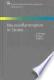
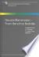

Web
Images
Videos
Maps
News
Shopping
Gmail
more
▼
Books
Finance
Translate
Scholar
Blogs
Updates
YouTube
Calendar
Photos
Documents
Reader
Sites
Groups
even more »
My library
|
Sign in
Advanced Book Search
Neuroinflammation in stroke
By Ulrich Dirnagl, Bernd Elger

0 Reviews
Write review
About this book
Add to My Library
▼
Get this book
Springer
Amazon.com
Barnes&Noble.com
-
$79.20
Books-A-Million
Find in a library
All sellers »
Related books

All related books »
Loading...
Pages displayed by permission of
Springer
.
Copyright
.
Page 1